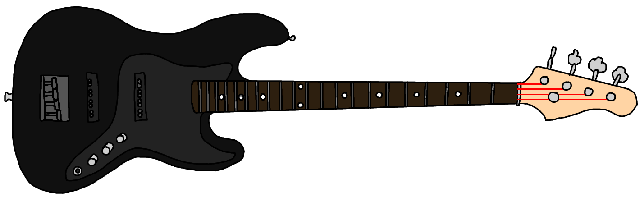
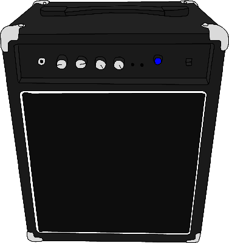

 
Bass Guitar Visualizer
Go Full Screen
Track:
☆ＳＥＩＮＷＡＶＥ☆２０００☆
The Doomsday
Artificial Intelligence Bomb
General Visual Effects:
Red Tint:
Invert Colors:
Noise:
Lines:
"Seeing Double" Distortion:
Vertical:
Audio Effects:
Bass Boost:
Audio Delay:
Bass Guitar Effects:
Weighted Strum:
Divide waveform:
Bass Amp Effects:
Visualizer:
Rectangles
Circles
Bezier Curves
Circle Radius:
Gradient Fill:
???